The interface's own art: the two lettering sheets, every button face, every square button and the parts square buttons are assembled from, and the bar cells. Each is drawn at the sizes the game uses it, on the table's blue and, for the lettering, on a dark panel too.
The whole repertoire and a sentence at each reading tier. Prose is white under a thin outline and the game multiplies it by an ink, so it is shown as drawn, on both grounds.
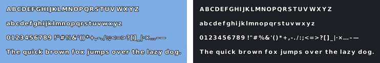
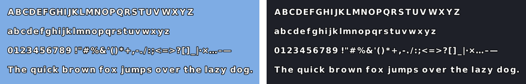
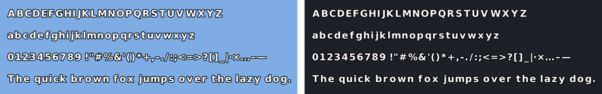
Every ink of the figure set, the same alphabet in each, at two sizes. A character an ink is missing is listed under it: a line falls back to the font whole when any glyph is missing, so one gap changes the typeface of a whole word.
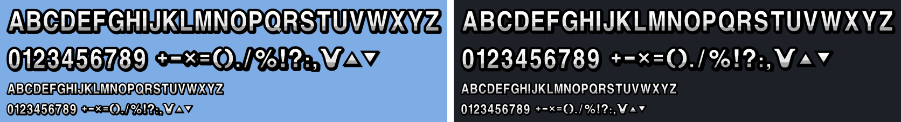
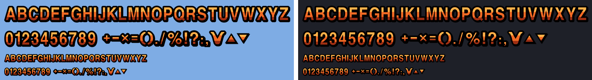
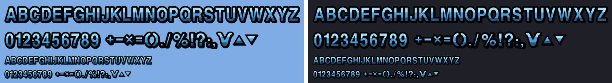
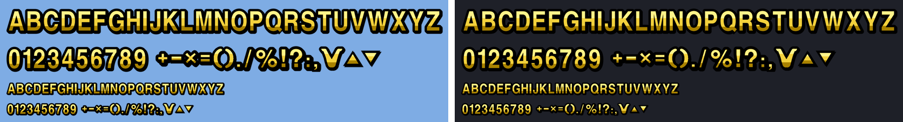
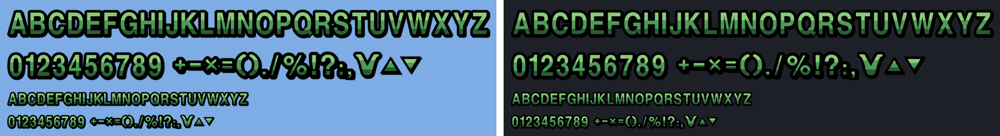
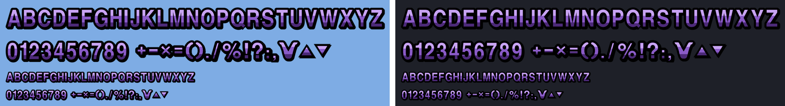
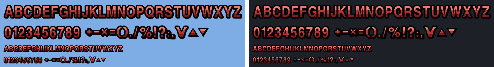
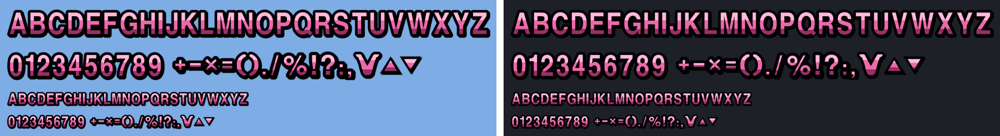
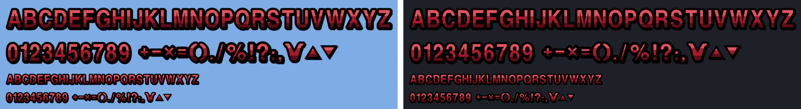
Each face at the four button heights — 80, 68, 44, 32 — at its own proportions and stretched to a wide button. The wide one is composed here by the screen's rule, ends scaled to the height and the middle filling the rest.
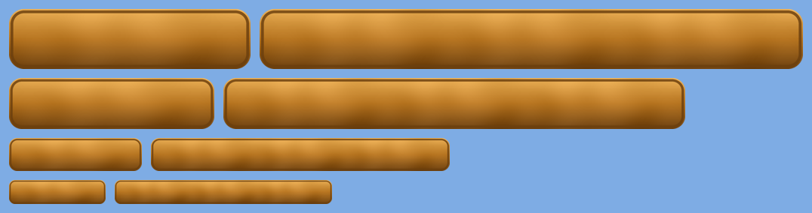
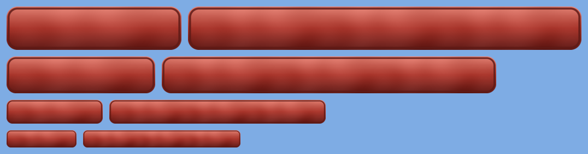
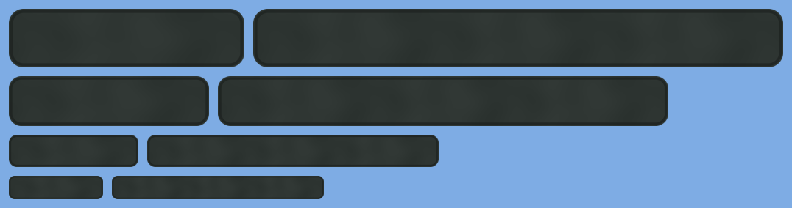
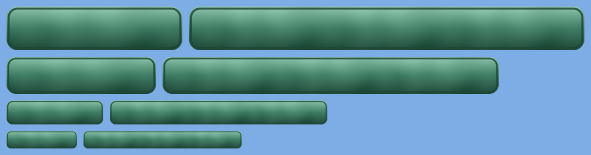
Each at 68, 44 and 32 pixels. A -pressed file is the latched drawing of the button above it.
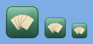
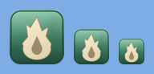
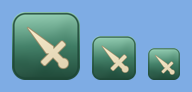
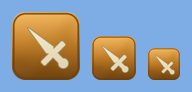
Every glyph laid over every blank tile, at 68, 44 and 32 pixels — the way a square button is built from parts. The first column is the tile alone.
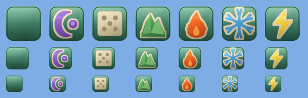
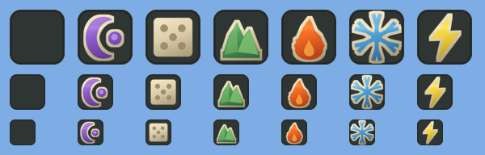
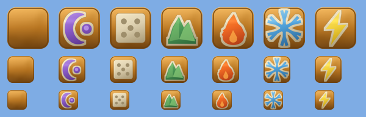
The bar cells and the health bar's pieces, as delivered.
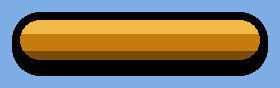
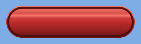
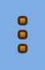
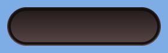